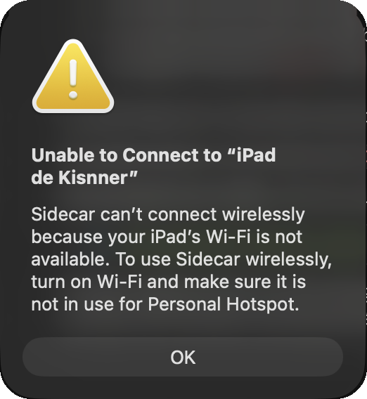
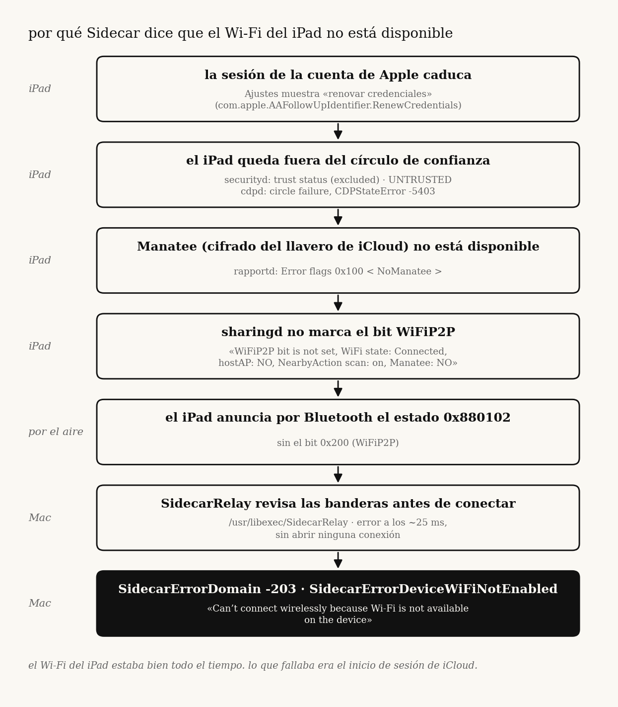
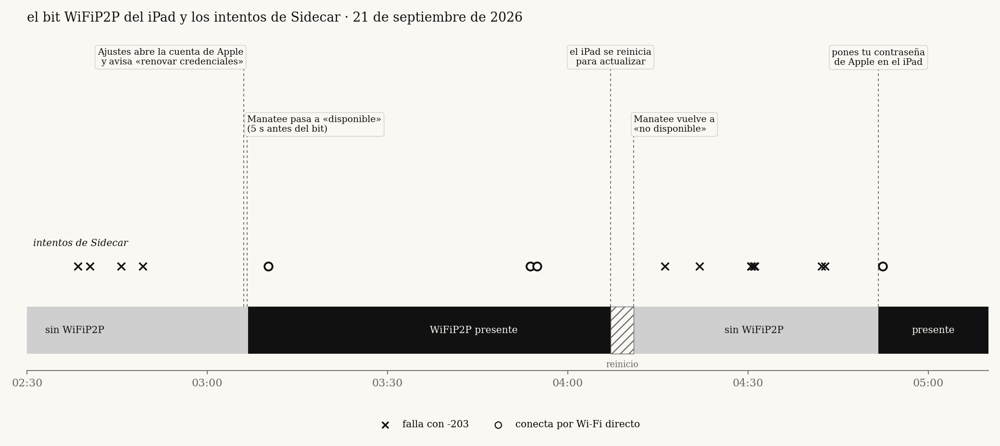

sidecar said my ipad's wi-fi was off. it was icloud.

a writeup of how i traced SidecarErrorDomain -203 on macos 27 from a misleading dialog down to one bluetooth bit, and from that bit to the ipad's icloud keychain trust state. no patching, no sip changes, no modified apple processes: just logs, a private framework read from a small probe, and a lot of measuring.
tl;dr
- the dialog blames wi-fi. wi-fi was fine the whole time.
- the mac decides in 25 ms, locally, based on a status bit the ipad advertises over bluetooth:
0x200(WiFiP2P). no bit, no wireless sidecar. - the ipad logs why it withholds that bit, every ~100 ms:
Manatee: NO. - manatee (icloud keychain end-to-end encryption) was down because the ipad's apple account had fallen out of the trust circle (
RenewCredentialspending in settings). - completing the apple account prompt on the ipad brought manatee back, the bit came back 5 s later, and sidecar connected.
{kind=link}

setup
| mac | MacBookPro17,1 (m1, 2020), macos 27.0 26A5425a, later 27.2 beta 1 26B5086k |
| ipad | iPad13,10 (12.9" ipad pro, 5th gen), ipados 27.0 24A435, later 27.2 24B5084k |
| network | same home wi-fi, mac on 5 ghz channel 44 the whole time |
| usb cable | sidecar always worked |
the problem showed up on september 6 with macos 27.0. i spent two days on the mac side, reset the ipad's network settings (which made things worse: the cable stopped working too until trust was rebuilt) and gave up. i came back to it on september 21 with a different approach: stop guessing, build a probe, measure.
1. the error never touches the network
the mac log for a failed attempt:
SidecarRelay: Connecting to IDS <ipad> 'com.apple.sidecar.display'
SidecarRelay: Open Session Failed: SidecarErrorDomain (-203)
SidecarDisplayAgent: Encountered unrecoverable error: SidecarErrorDomain Code=-203 "SidecarErrorDeviceWiFiNotEnabled"
25 ms between the first and second line. you can't open a network session and fail it in 25 ms. this is a local check.
the error comes from /usr/libexec/SidecarRelay (swift, arm64e). in build 26B5086k exactly one instruction loads the code: mov x2, #-0xcb at 0x100046908. it's reached through tbz w22, #0x0, 0x100046900, from a block that masks the device's flags (and + cmp/ccmp) and, when they don't match, calls String.hasPrefix to pick between two errors. the binary also carries the strings RapportStatusFlags, WiFiP2P, WiFiOff, WiFiHostAP, iWiFi, ForceAWDL and ForceUSB.
i didn't fully decode what each mask means. what i can say from the disassembly is that the decision is a flag check. which flag matters came from measuring, below.
2. measuring the flag
SidecarCore is a private framework. its SidecarDisplayManager exposes sharedManager, devices, connectToDevice:withConfig:completion: and a status property on each SidecarDevice. that property is the rapport status bitmask the ipad advertises over bluetooth. the same number shows up in sharingd as SF 0x… and in SidecarRelay as Device Changed <…>.
i wrote sidecar-probe, a small swift tool that loads the framework and reads that property, prints it once per second, and can trigger the same connect call the display menu uses. that turned "sidecar is broken" into something i could watch:
status |
flags | wireless sidecar |
|---|---|---|
0x880102 |
BLE DuetSync Owner ApplePay |
fails, -203 |
0x880302 |
BLE DuetSync WiFiP2P Owner ApplePay |
connects |
one bit: 0x200, WiFiP2P. over usb the ipad advertises iWiFi … USB instead and the bit isn't needed, which is why the cable always worked.
this also explains a confusing detail: universal control opened awdl (apple wireless direct link) connections with the same ipad while sidecar refused to. rapportd brings awdl up on demand through NeedsAWDL events and ignores devices "that do not have expected status flags". universal control goes through a forced path (ForceAWDL). sidecar doesn't.
so the question changed from "why is sidecar broken" to "why doesn't the ipad advertise WiFiP2P".
3. the bit showed up on its own
with the probe running, at 03:06:45 the ipad went from BLE DuetSync Owner ApplePay to BLE DuetSync WiFiP2P Owner ApplePay … MultiUserDevice. sidecar connected at 03:10. at 04:07 the ipad restarted to install an update, the bit disappeared again, and sidecar went back to -203.
that gave me a window with the bit and a window without it. every successful connection fell inside the window with the bit, and every failure fell outside.
{kind=link}

the person using the ipad remembered that around 03:06 an icloud alert had asked for the ipad passcode and then the iphone's. that was the first real lead.
4. the ipad says why
the mac can only see the result. the ipad knows the reason, so i pulled its logs over the cable:
sudo log collect --device-udid <UDID> --last 10h --output /tmp/ipad.logarchive1.1 gb. in sharingd (SDNearbyAgentCore), roughly every 100 ms:
WiFiP2P bit is not set, WiFi state: Connected, hostAP: NO, NearbyAction scan: on, Manatee: NO
the ipad decides from four inputs: wi-fi state, whether it's a hotspot, whether nearby-action scanning is on, and whether manatee is available. three of them were fine the whole night. the only negative was Manatee: NO.
| period | WiFi state |
hostAP |
scan |
Manatee |
bit |
|---|---|---|---|---|---|
| hours before 03:06 | Connected |
NO |
on |
NO |
no |
| 03:06:45 to 04:07 | Connected |
NO |
on |
available | yes |
| after the restart | Connected |
NO |
on |
NO |
no |
this line also ruled out, from the ipad's own point of view, two things i had spent days on: wi-fi (Connected) and personal hotspot (hostAP: NO).
5. why manatee was down
manatee is the end-to-end encryption layer for icloud keychain and other protected data. it depends on the device being trusted in the account's octagon trust circle. the ipad's logs showed the whole chain:
cdpd/CDPManateeStateController:Manatee not available due to circle failure with error: CDPStateError Code=-5403securityd:trust status: (excluded),updated account trust state: UNTRUSTED, from 23:00, the first line capturedrapportd: error flag0x100 < NoManatee >- settings: follow-up
com.apple.AAFollowUpIdentifier.RenewCredentialspending every time settings read its list (00:22, 00:25, 02:14, 02:15). opening settings didn't clear it.
and the moment it was fixed, to the millisecond:
03:06:37 securityd new syncing policy (views include Manatee)
03:06:40 securityd updated account trust state: TRUSTED (.134)
03:06:40 sharingd Manatee is available (.119)
03:06:40 rapportd Error flags changed: 0x100 < NoManatee > -> 0x0
03:06:45 mac ipad starts advertising WiFiP2P
03:06:52 settings RenewCredentials no longer pending
6. reproducing it
a correlation from one event is a story. i wanted the chain to break and heal again.
- 04:07, the ipad restarts for the update. 04:10:37 trust goes back to
UNTRUSTED, 04:10:38 manatee to not available, 04:10:57 the bit disappears. sidecar fails.RenewCredentialsis back in settings at 04:17. - ~04:51, the apple account password is entered on the ipad. 04:51:42 the bit is back. 04:52:22 sidecar connects over direct wi-fi (
[AWDL]).
dead ends
each of these was tested and the failure continued. what killed each hypothesis was a measurement, not an argument.
| hypothesis | why it's wrong |
|---|---|
| mac wi-fi, bluetooth or awdl down | wi-fi on 5 ghz, bluetooth on, awdl0 up; the mac reads WiFiP2P from another device; universal control opens awdl to this same ipad |
| personal hotspot on the ipad | the ipad logs hostAP: NO on every line |
| vpn | off on both devices, no change |
| 2.4 vs 5 ghz | ipad on 5 ghz, same ssid as the mac: bit absent in 75 of 75 one-second reads |
| mismatched os versions | connected with ipad 27.0 and mac 27.2; failed with both on 27.2 |
| charger | connected with the ipad unplugged; failed while plugged in for 20+ min |
| stale state on the mac | restarted rapportd, sharingd, SidecarRelay, identityservicesd: same 0x880102 comes back live from the ipad |
| reset ipad network settings | made it worse |
| restart the ipad | doesn't fix it; the account asks for credentials again and the bit is lost |
the fix
on the ipad:
- settings → your name. if it asks to update apple account settings or to sign in again, finish it (password, verification code, device passcodes if asked).
- icloud → passwords & keychain must be on.
- if that's not enough, sign out of the apple account and sign back in.
to confirm: ./sidecar-probe status should report WiFiP2P present and exit 0, and ./sidecar-probe connect should connect.
what i don't know
- why the account was in
RenewCredentialsin the first place. it was already that way in the first hour of captured logs. - why a restart undid it once. after the second fix (with the password) the bit stayed.
- whether other inputs can clear
WiFiP2Pthe same way. only manatee changed while everything else was constant, so only manatee is proven. - how general this is. one mac and one ipad. i haven't seen other models.
- i didn't capture the ipad's logs at 04:51. that moment is observed only from the mac and from what the ipad's user reported.
- i didn't restart the ipad after the final fix to see if it holds.
takeaways
- the error message is generic. the
-203dialog shows for any reason the check fails. here it sent me to wi-fi and hotspot settings for two days. - find where the decision is made, then measure its input. once i knew it was a local flag check, a probe that read the flag once per second did more than any number of restarts.
- the other device usually knows. the ipad was logging the exact reason ten times a second. the mac had no way to see it.
- write down the dead ends with the measurement that killed them. several of my intermediate explanations were wrong. the table is what kept me from going back to them.
apple could fix this cheaply: when the ipad withholds WiFiP2P because of NoManatee, the dialog could say "sign in to icloud on your ipad" instead of "turn on wi-fi".
files
tools/sidecar-probe.swift: readsSidecarDevice.status, watches it, and connects without the ui (private api, diagnosis only)tools/ipad-why.sh: pulls the relevant lines out of an ipad log archive and masks personal dataevidence/: masked log excerpts from both devicesnotes/: original investigation notes (spanish)
personal data (account email, account identifiers, udid, addresses) is masked in every excerpt. the raw logs aren't published.